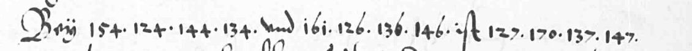
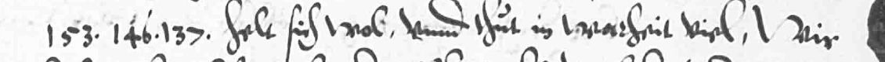

Jan and Lodewijk van Nassau to William of Orange, Dillenburg, 22 October 1573
What it says
name the Landgrave beside the Duke of Saxony ... the Elector Palatine ... 'helt sich wol und thut in warheit viel'
Source: quoted in the exhibit's selection notes from the verifier's depth sentence.
The reading

As read, sign by sign, with grades
English (translation, interpretation)With the Duke of Saxony ... and the Landgrave ... is

As read, sign by sign, with grades
English (translation, interpretation)The Count Palatine ... holds well
Who, where, when
Named in the reading (persons and places as the cipher decodes them)


How we know
In WVO 5797 (Jan and Lodewijk van Nassau to Orange, 22 Oct 1573), printed by Groen van Prinsterer in 1837 with several passages left undeciphered, two of the blanks read in part, 'the Palsgrave (Pfaltzgraf) holds well' and '... and the Landgrave...', by locating them with a letter table recovered by our own cryptanalysis and valuing the two name codes from a contemporary interlinear gloss on the sibling letter WVO 5550; no prior decipherment of these blanks located (N4); the letter's other text is Groen's.
The verifier's safe sentence, quoted from AUDIT.md.
N4 no prior decipherment located (editions searched)partially deciphered (about 11% of the cipher text)period key, rebuilt by us from a decipherment or key sheet of the time; key recovered by ustwo audits: yes
- AUDIT.md · decode script decode.json · key key.tsv, key_4614.tsv, key_5799.tsv, key_5801.tsv · image source https://resources.huygens.knaw.nl/media/wvo/images/05000-05999/05797.pdf · folder
- Regenerate:
python3 tools/decode_key.py ciphers/lodewijk-van-nassau-1573-74 --check - Control: key_full v3 shows 0 regressions on the 4613/4615 controls and two fresh-instance re-derivations were byte-identical
Search log from AUDIT.md (6 search lines, 30 on blocked or unreachable hosts)
- his. IA full-text phrases "cartas del conde Ludovico", "cifra de Ludovico", "Ludovico" descifrada 1574
- low-value residual, since the contents list no candidate. Kervyn: covered (A1.2 item 4, full-text grep). Item-level archival
- Glawischnig 1973, Niederlande, Kalvinismus und Reichsgrafenstand (IA niederlandekalvi0000glaw, lending-only) | searched (full-text search, no pages) | be-api fts inside the item; positive control "Dillenburg" hits | the 5797 phrases 0; "O
- or Kassel) in the Palatine or Hessian papers. Searched the three editions that print those papers and the two
- four full-text copies in one call. The brief's author name for the 1937 monograph (Kramer) was wrong (Graff), which would
- (a) Groen 1st ser. V and Supplément | searched (indirect) | Google Books full-text phrase search over every digitised Groen volume (the Archives scans are in GB) | no hit outside t. IV for any of the six phrases
Unreachable
- Scholarship | partly | CrossRef 4 queries (nothing relevant); HAL 1 query: one hit, "Louis de Nassau et le parti huguenot" (2007), *not read; OpenAlex unreachable (shared daily budget exhausted, HTTP 429); Semantic Scholar *unreacha
- in Wiesbaden were not searched; (3) OpenAlex and Semantic Scholar were unreachable and the HAL item (2007) was
- stopped); catalog.hathitrust.org 3; data.htrc.illinois.edu 2; openlibrary.org 1; api.openalex.org 7 (all 429)
- api.semanticscholar.org 4 (429, stopped); api.crossref.org 4; api.archives-ouvertes.fr 1; persee.fr 1; WebSearch 2.
- 11. *Scholarship.* OpenAlex was still 429 (3 requests, stopped). Semantic Scholar was 429 (1 request, stopped).
- Scholarship | partly: CrossRef, HAL searched; OpenAlex, Semantic Scholar unreachable (429); Daussy 2007 not read; JSTOR queued (4 rows) | | no cryptologic study found
- scholarship: the open indexes were unreachable.
- www.koninklijkeverzamelingen.nl 2 curl + 6 browser loads; api.openalex.org 3 (429); api.semanticscholar.org 1 (429)
- Poullet/Piot, Correspondance du cardinal de Granvelle t. (1572-75; Spanish-side reports, intercepts) | *not covered; D1 tried: IA has only t., and Google Books lists no full-view copy (2 API queries) | | unreachable. *Not principal for
- Open scholarship | V2 + A1 11 | CrossRef, HAL covered; OpenAlex and Semantic Scholar 429 (do not block N4: Danzay precedent); Daussy 2007 unread | no cryptologic study found
- confirmed.** Confidence moderate-high for print; lower for scholarship (open indexes 429; Daussy 2007 unread).
- family | searched or unreachable | route and queries | result
- OpenAlex | *unreachable* | 1 query, api.openalex.org/works?search=... | HTTP 429, shared-IP daily budget ("$0 remaining; resets at midnight UTC"). Fourth 429 in this folder's log (V2, A1, D1, now G1); does not block N4 (Danzay/D1 preced
- Semantic Scholar | *unreachable* | 1 query, api.semanticscholar.org/graph/v1/paper/search | HTTP 429. Same precedent
- (429); api.semanticscholar.org 1 (429). No archive.org, no HathiTrust (Granvelle tome identity unresolved, so
- Open indexes: OpenAlex (api.openalex.org/works?search=...) and Semantic Scholar (/graph/v1/paper/search) retried once each from the cloud at about 17:21 UTC: both HTTP 429 (shared free daily budget used up). The owner's run of 24 Sept 2
- Semantic Scholar | *unreachable* | S2_KEY sent; 1 call answered (0 results for "Ludwig von Nassau 1573 Chiffre"), then HTTP 429 twice by hand and once inside print_check; stopped per the good-citizen rule
- Scholar 429, CORE absent, JSTOR queued, Wetterauer Grafenverein literature, e.g. G. Schmidt 1989, not reached).
- api.openalex.org 11; api.crossref.org 3; api.semanticscholar.org 4 (1 answered, 3 x 429, stopped)
- Schmidt, Der Wetterauer Grafenverein (1989) | *unreachable inside the book* | Google Books zxxoAAAAMAAJ (NO_PAGES; one keyword snippet: Dillenburg as a hub of French diplomacy); CrossRef lists two reviews (BMGN 1995, ZRG GA 1991) | book
- CrossRef | searched (after one retry) | 429 inside print_check; one retry after a pause answered | Schmidt 1989 reviews; Nassau genealogy chapters; nothing on the letter
- Semantic Scholar | searched (after one retry) | 429 x2 inside print_check; two retries after a pause answered 200 | 0 results ("Nassau 1573 Graveneinigung Wetterau Pfalz Hessen", "Ludwig Nassau 1573 cipher")
- api.crossref.org 2 (1 x 429, 1 answered); api.semanticscholar.org 4 (2 x 429, 2 answered); api.archives-ouvertes.fr 1
- Lossen, Der Kölnische Krieg I (1882) | *snippet only* | Google Books iRNlEQAAQBAJ (2025 reprint, PARTIAL): Salentin "erbot, durch Johann von Nassau zu erkunden..." | not on IA by creator search; the book's account of Oct 1573 not read i
- Graff 1937 (Salentin monograph) | unreachable | Google Books keyed, country=US: NO_PAGES both records; IA creator search 0 | JSTOR row appended
- HHStAW Abt. 171 C 368 (Arcinsys Hessen) | unreachable by plain URL | arcinsys.hessen.de detail URL answers 302 (session/JS app); not pursued further | Lossen's footnote gives the file's content (Jan's draft relation, fol. 25; report of 1
- which V8.5 and A2.3 could not open: the Marburg university library has digitized it (archiv.ub.uni-marburg.de/eb/2021/0160
- (g) OpenAlex, Semantic Scholar, CORE, CrossRef | searched | 4 topic queries each (S2 one 429, not retried); CrossRef 3 phrases | nothing on these letters or their cipher
- api.openalex.org 4; api.semanticscholar.org 4 (one 429); api.core.ac.uk 4; api.crossref.org 3; github.com 2 clones. No subagents.
- 5 (decoded phrases) | tools/print_check.py --only ia-global,gbooks, 10 new phrases from the current readings and the 5797 spots: 'convocation des conseillers des electeurs', 'trois cens chevaux qui sont prests de hazarder', 'le capitaine